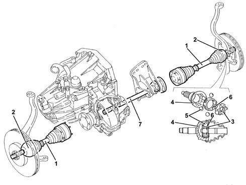

2710A drive shafts and joints
- Path
- Descriptions > 27 AXLE > 2710 FRONT AXLE > 2710A drive shafts and joints
- Kind
- system description
- Applies to
- all engines; all production periods
- Interactive page
- https://sloeber94.github.io/elrnDB-a156/en/#/3232912
Applies to: all engines; all production periods
The driveshafts (1), made from high resistance steel, have splined ends to allow matching with the constant velocity joints (2).
The constant velocity joints are composed of an innerl "drive" core (3) fitted on the input shaft and an outer "driven" shell (4), which is part of the coupling output.
The inner core has six spherical splines on the outer surface which contain six balls (5), kept in place by a chamber (6).
The balls are the true drive transmission element, because they are simultaneously housed in the same number of grooves on the inner surface of the shell.
The intermediate shaft (1), made from high resistance steel, connects the flange and the differential with the right driveshaft by means of the splined end.
To limit the projection between the mounting points, the intermediate shaft is supported by a seat on the gear casing.
